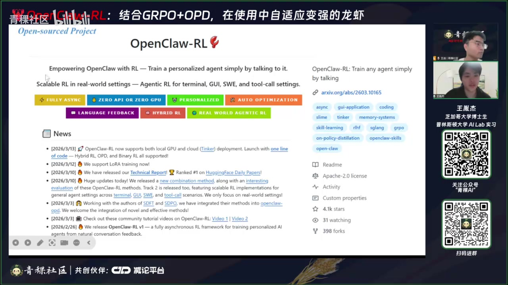
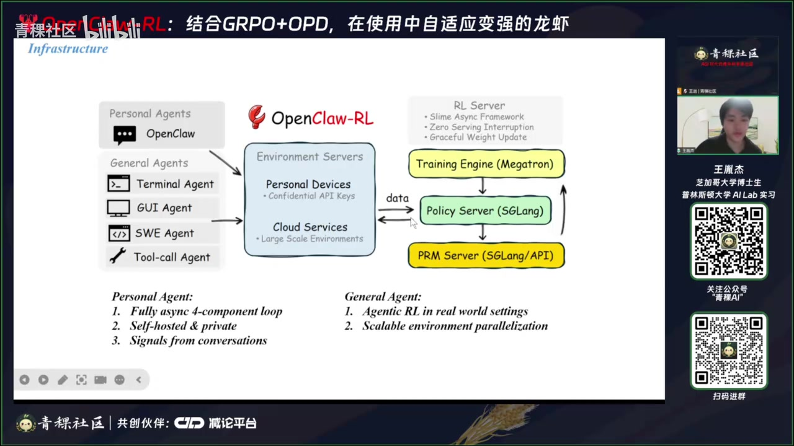
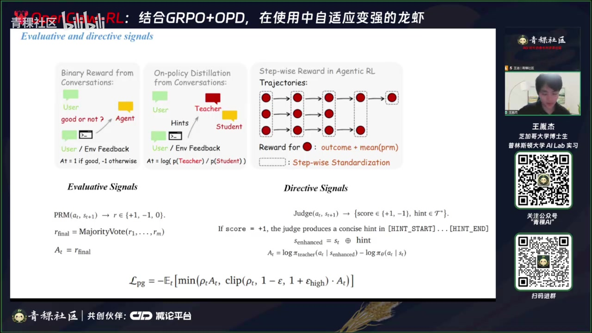
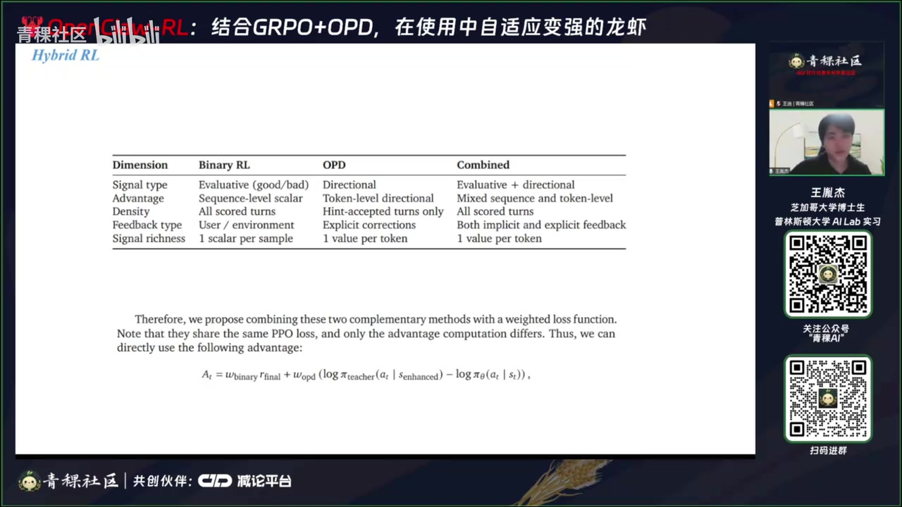
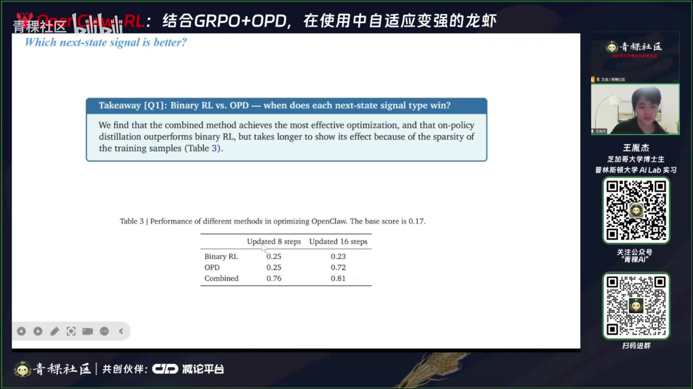

01｜任务：让个人智能体在使用中变强
OpenClaw‑RL 关注的不是离线一次性后训练，而是把日常交互变成持续学习数据，同时避免训练阻塞用户正在进行的任务。
00:40–06:50 系统分为个性化智能体与通用 computer‑use 两条线。前者运行在用户本地环境，目标是从对话中学会用户偏好；后者面向终端、GUI、软件工程等可扩展环境。


02｜两类来自下一状态的信号
用户通常不会认真打分，但会在下一句话里表达满意、纠正方向，环境也会通过报错或成功结果给出反馈。
评价信号
反馈模型判断上一轮行为是好、坏或不确定，形成 −1/0/+1 的序列级奖励。
方向信号
从用户纠正中提炼具体 hint，构造一个带未来信息的教师分布，告诉策略“应该怎么改”。
07:20–14:30 评价信号覆盖广，只需判断成败；方向信号更稀缺，但能提供 token 级细粒度改进。反馈模型会多次独立判断并做多数投票，以过滤不确定样本。

03｜混合 GRPO 与 OPD
两种信号正好互补：GRPO 提供覆盖率，OPD 提供方向性；简单加权即可让更多会话参与训练，同时保留 token 级指导。
| 分支 | 监督粒度 | 优势 | 主要缺点 |
|---|---|---|---|
| GRPO/二值奖励 | 整条序列 | 几乎每轮都可判断，数据密度高 | 只知道好坏，不知道具体该改哪里 |
| OPD/方向蒸馏 | token 级 | 能针对表达、偏好和动作给出明确方向 | 必须从反馈中抽出可靠 hint，样本稀缺 |
| 混合目标 | 两者并用 | 覆盖与方向兼得 | 依赖反馈模型质量与权重设计 |
14:30–17:50 报告把两个 loss 的默认权重都设为 1；能收集到哪一类信号就启用哪一支，两类同时存在时共同更新。

04｜个性化实验与可扩展方向
实验用模拟学生和教师持续使用智能体，观察输出是否向“更自然”或“更友好具体”的偏好迁移。
18:00–27:00 学生不希望作业带明显 AI 痕迹，教师希望批注更友好、更具体。组合方法在相同训练时间下最早出现稳定模式变化；案例中约 36 道题后已能肉眼观察到表达风格明显迁移。

通用 computer‑use 分支进一步讨论 step‑wise 反馈、环境任务与大规模异步 rollout，但报告强调真正大规模、稳定、可复现的训练仍在探索。
05｜部署边界与风险
“从对话自动学习”把标注负担转移给反馈模型，也把偏差、隐私与错误强化风险带入在线闭环。
30:00–64:00 问答集中在奖励归一化、step‑wise credit、数据平衡与反馈模型稳定性。演讲者建议对成功/失败样本做筛选与平衡，并持续检查策略是否发生意外退化。
证据边界：本文忠实整理视频中的讲解、论文图表与演讲者判断，并非对论文复现实验或独立同行评审。自动转录中的专名已结合幻灯片校正；仍不确定的缩写和动态数字应以原论文或项目页面为准。
隐私提示：把真实用户对话用于持续训练意味着内容会进入反馈与训练流水线。视频展示的是方法原型；生产系统还需明确本地处理、数据留存、用户授权、可撤回与敏感信息隔离。